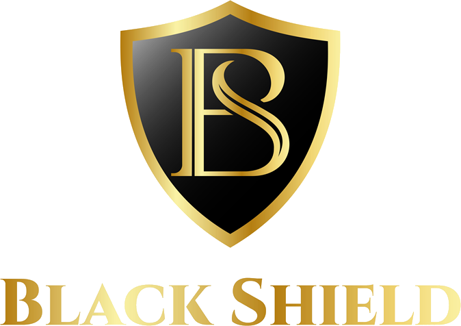
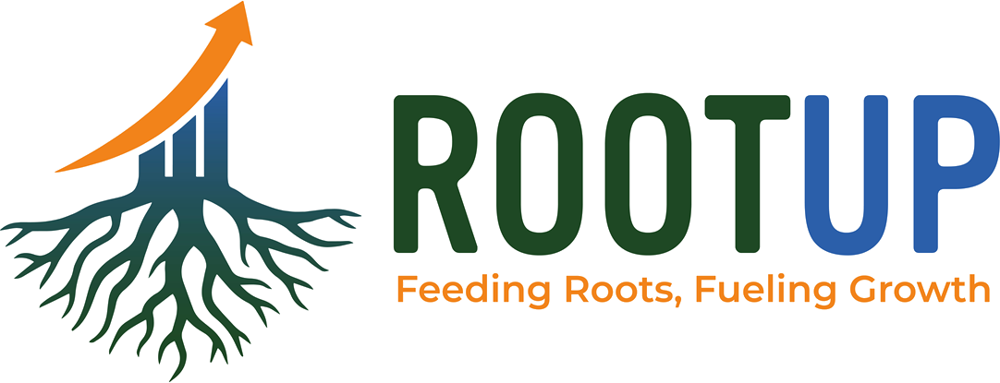

Ils nous ont fait confiance
Références
Nos références, avec ce que nous y avons fait.
Une liste de logos ne prouve rien. Vous trouverez ici le secteur, la nature de la mission et l’année. Chaque client cité a donné son accord.
Filtrer par secteur
Ils nous ont fait confiance




Ce que nous avons fait, pour qui
Quatre colonnes. Un comité ne lit pas un récit, il coche des lignes.
| Client | Secteur | Mission | Année |
|---|---|---|---|
| Afrikalao | Agro & grande conso | Communication de marque agroalimentaire | — |
| Tiko Transit & Logistics | Transport et logistique | Communication corporate et image | — |
| Marenova | Agro & grande conso | Communication de marque et contenus | — |
| Onemart | Transport et logistique | Communication corporate et visibilité | — |
| Africim | Industrie | Communication de marque et image | — |
| Cuisine | Agro & grande conso | Animation de marque et contenus | — |
| Black Shield | Sécurité | Communication de marque et image | — |
| ROOTup | Services | Communication digitale de marque | — |
Aucune mission publiable dans ce secteur pour le moment. Écrivez-nous : nous vous dirons ce que nous pouvons partager.
Vous montez un dossier d’appel d’offres ?
Le dossier de références en PDF réunit cette liste, nos pièces administratives courantes et la plaquette de l’agence. Un seul fichier, à jour, daté. Vous n’avez rien à nous redemander par courriel.
Un secteur qui n’apparaît pas ?
Certaines missions ne sont pas publiables, soit parce que le client ne le souhaite pas, soit parce qu’une procédure est en cours. Demandez-nous : nous vous dirons ce que nous pouvons partager et sous quelle forme.